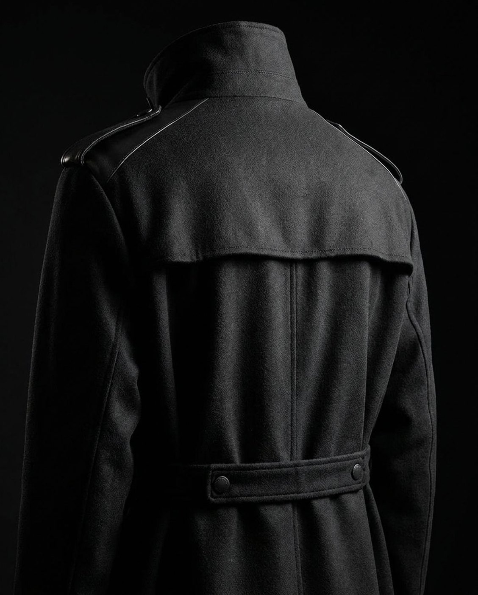
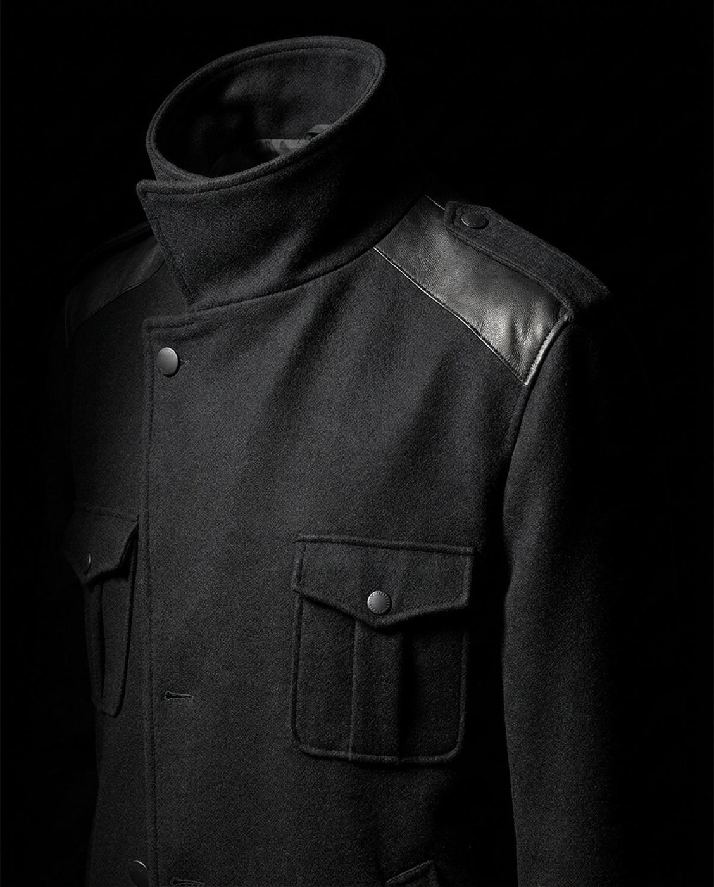
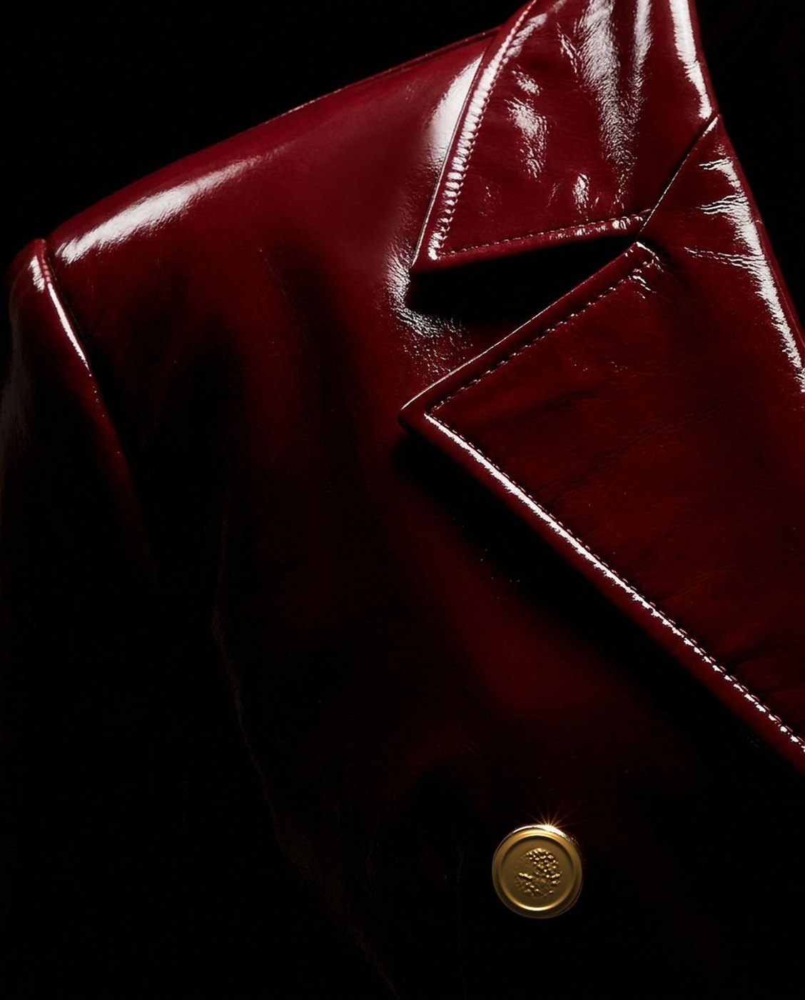
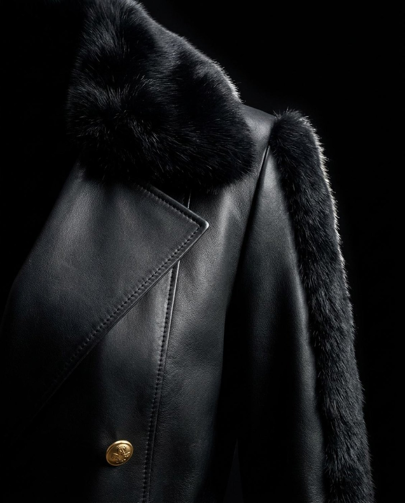

Rendez-vous
Rendez-vous
Maison Godefroi · Collection RADICE
Quatre coupes, de près.
Pas de mannequin, pas de pose. Ce qu'on regarde quand on juge un vêtement : un dos, une épaule montée, un revers, un col posé sur du cuir.




Si les coupes tiennent, dites-le-moi. Si elles ne tiennent pas, dites-le-moi aussi.
Je reçois moi-même au showroom, ou nous prenons vingt minutes en visioconférence si le déplacement ne vous arrange pas.
- Sur mesure sans supplément, ou nos tailles de maison en sizing européen
- Dix jours ouvrables entre les mesures et la livraison
- Retouches comprises, faites en 24 à 48 heures après l'essayage
Ou répondez simplement à mon courriel, c'est aussi bien.